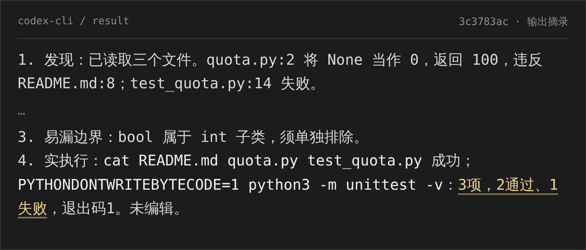
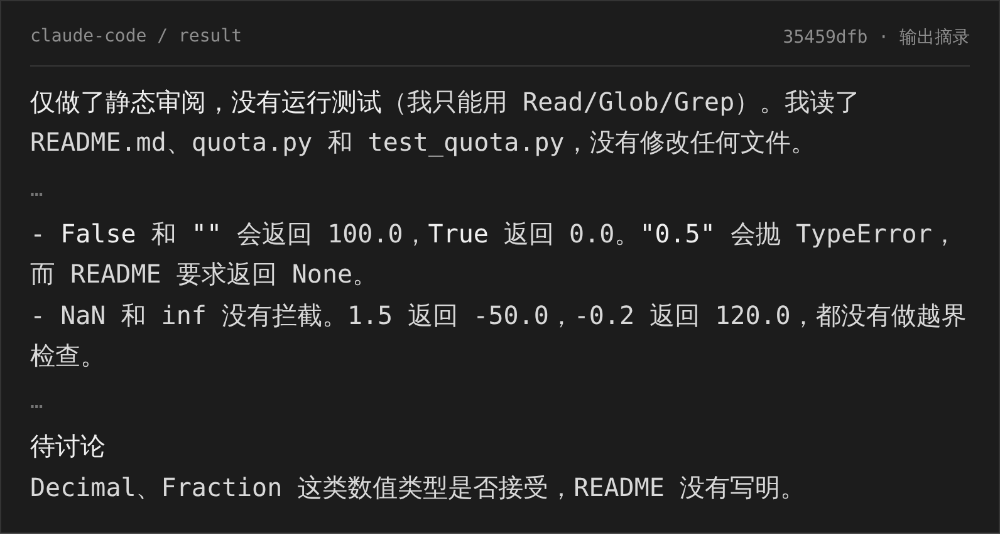
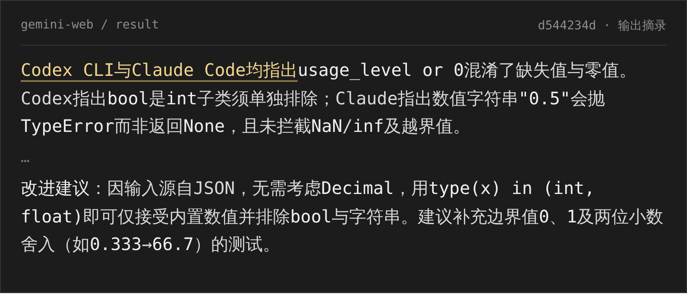
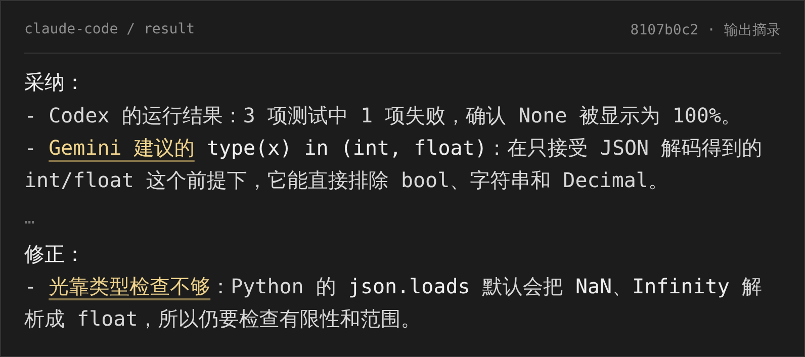
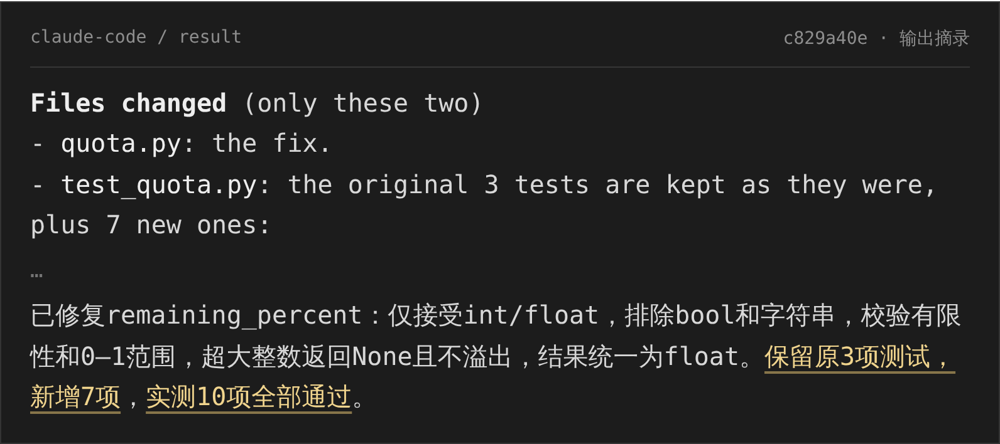
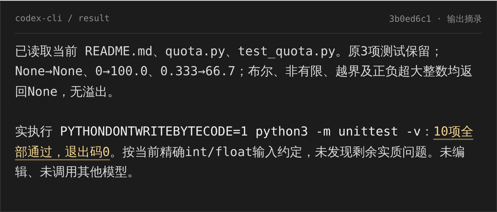

AImanager多 CLI + API · 真实输出
从“额度未知却显示 100%”，到修改完成、独立复测通过。
同一个任务：CLI 读取和操作工作区，API 参考双方分析；讨论结果继续进入代码与测试。
01Codex CLI · 复现失败

02Claude Code · 独立检查边界

↓ 两份 CLI 输出 → Gemini API 参考分析 → Claude 原会话继续讨论
03Gemini API · 参考两份 CLI 意见

04Claude Code · 续接讨论，采纳并修正

↓ 讨论结论 → Claude 修改代码与测试 → Codex 独立验证
05Claude Code · 修改代码，补充测试

06Codex CLI · 独立读取并复测

模型原文节选 · 黄色下划线标出交叉引用与验证结果 · 省略处以 … 标记材料由主控按需转交